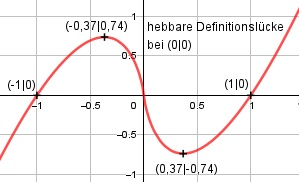

Aufgabe 153 f(x) = x * ln x2 Produktregel erste Ableitung: u = x, u' = 1 v = ln x2 Kettenregel: 2x 2 v' = ---- = --- x2 x 2 f'(x) = 1 * ln x2 + --- * x = ln x2 + 2 x Zweite Ableitung: 2x 2 f''(x) = ----- = --- x2 x Zur Beurteilung, ob f'''(x) ≠ 0: (Begründung siehe Aufgabe 105) u = 2, u' = 0 u' 0 f'''(x) = --- = --- = 0 für alle x v x Definitionsbereich: -∞ < x < ∞ x ≠ 0 Hebbbare Definitionslücke: (Regel von l'Hospital) ln x2 ∞ x * ln x2 = ------- = --- für x = 0 1 ∞ --- x 2x 2 u = ln x2, u' = ---- = --- x2 x 1 1 v = --- = x-1, v' = -x-2 = - ---- x x2 2 --- u' x lim --- = ----- = -2 * x = 0 x -->0 v' -1 ----- x2 --> f(0) = 0 hebbare Definitionslücke Wertebereich: -∞ < f(x) < ∞ Symmetrie zur y-Achse bzw. zum Punkt (0|0): f(-x) = -x * ln (-x)2 = -x * ln x2 ≠ f(x) --> keine Achsensymmetrie -f(-x) = -(-x * ln x2) = x * ln x2 = f(x) --> Punktsymmetrie Nullstellen: f(x) = 0 x * ln x2 = 0 x = 0 --> hebbare Definitionslücke ln x2 = 0 x2 = e0 x2 = 1 |ⱱ x1,2 = ± 1 N1(1|0), N2(-1|0) Schnittpunkt mit der y-Achse: x = 0 hebbare Definitionslücke Extrempunkte: f'(x) = 0 ln x2 + 2 = 0 |-2 ln x2 = -2 x2 = e-2 |ⱱ x1,2 = ± 0,37 f(0,37) = 0,37 * ln (0,37)2 = -0,74 Wegen Punktsymmetrie f(0,37) = 0,74 2 f''(0,37) = ------ > 0 0,37 --> Tiefpunkt (0,37|-0,74) Wegen Punktsymmetrie Hochpunkt (-0,37|0,74) Wendepunkte: f''(x) = 0 2 --- = 0 |*x x 2 = 0 Widerspruch --> keine Wendepunkte Hinweis: Der Graph ist für x < 0 rechts- und für x > 0 linksgekrümmt.Ein Wendepunkt existiert aber nicht, weil im Punkt (0|0) eine Lücke vorliegt. Graph:
